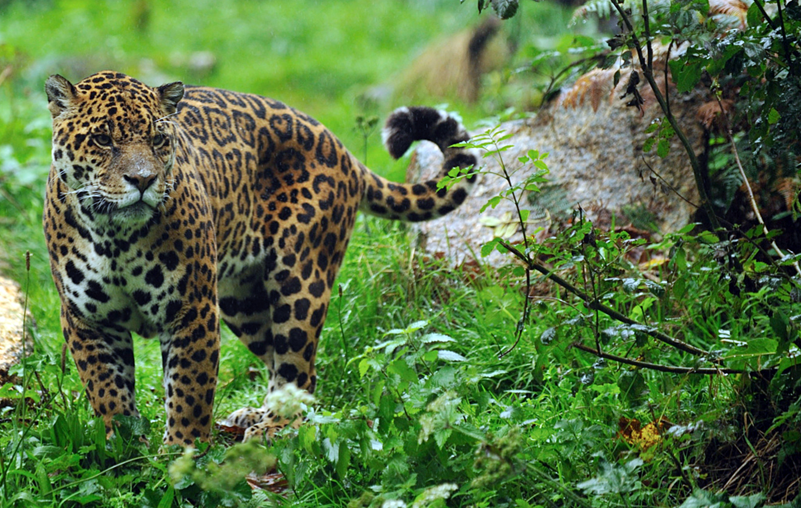

Atropellamientos de Yaguaretés en Misiones
Los yaguaretés, monumentos naturales de la provincia de Misiones, enfrentan una amenaza crítica: los atropellamientos en rutas que atraviesan sus hábitats naturales. Se estima que anualmente más de 5.000 animales silvestres mueren en estas circunstancias, incluyendo especies en peligro de extinción como el yaguareté.
Un caso reciente que conmocionó a la comunidad fue el atropellamiento de una cachorra de yaguareté en la Ruta Nacional 12, cerca de Puerto Iguazú, el 2 de octubre de 2024. Este trágico incidente llevó al gobierno provincial a ofrecer una recompensa de $2 millones por información sobre el responsable y a iniciar acciones legales para identificarlo.
La problemática de los atropellamientos no es nueva. En los últimos 12 años, al menos cinco yaguaretés han muerto en rutas misioneras, todos dentro de áreas naturales protegidas con límites de velocidad establecidos y señalizados. Sin embargo, el exceso de velocidad y la falta de controles efectivos continúan poniendo en riesgo a la fauna local.
Para abordar esta situación, se han conformado mesas de trabajo que reúnen a organismos provinciales y nacionales, además de organizaciones no gubernamentales. Estas iniciativas buscan implementar medidas como controles de velocidad, instalación de radares y señalización adecuada en tramos críticos de las rutas.
Medidas de concientización y prevención
Para abordar esta problemática, se han implementado diversas acciones:
- Campañas de concientización: Se realizan actividades educativas en escuelas y comunidades locales para sensibilizar sobre la importancia de respetar las señales de tránsito y los límites de velocidad en zonas críticas.
- Instalación de señalización adecuada: Se han colocado carteles que alertan sobre la presencia de fauna silvestre y la necesidad de reducir la velocidad en tramos específicos.
- Controles de velocidad: Se han intensificado los controles de velocidad en áreas identificadas como de alto riesgo para la fauna.
- Colaboración interinstitucional: Se han conformado mesas de trabajo que reúnen a organismos provinciales y nacionales, además de organizaciones no gubernamentales, para coordinar acciones conjuntas.
Cómo prevenir los accidentes
Los conductores pueden contribuir significativamente a la prevención de atropellamientos siguiendo estas recomendaciones:
- Respetar los límites de velocidad: Circular a la velocidad permitida, especialmente en zonas rurales y áreas protegidas.
- Estar atentos a la señalización: Observar y acatar las señales que indican presencia de fauna silvestre.
- Conducir con precaución en horarios críticos: Los animales suelen cruzar las rutas al amanecer y al atardecer.
- Reportar avistamientos: Informar a las autoridades locales sobre avistamientos de animales en la vía para que se tomen medidas preventivas.
Conclusión
La conservación del yaguareté en Misiones requiere del compromiso de todos. Respetar las normas de tránsito y estar conscientes de la presencia de fauna silvestre son acciones fundamentales para proteger a esta especie y mantener el equilibrio ecológico de la región.